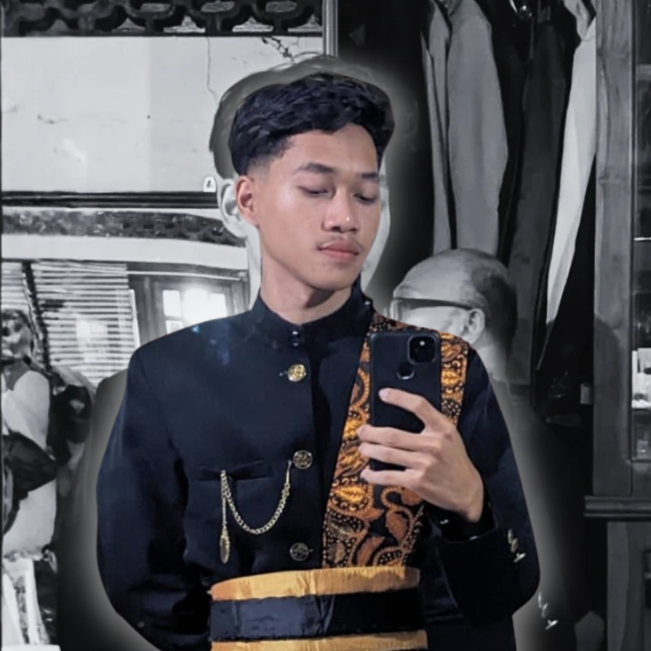

Mengenal Lebih Dekat
Rakhmat Hidayat, S.Kom
Sarjana Komputer dengan rekam jejak nyata di bidang event management, administrasi media universitas, rekayasa perangkat lunak, dan produksi konten visual digital.

Sarjana Komputer dengan Minat pada Teknologi, Media, & Event
Lulusan Sarjana Komputer (S.Kom) dengan minat dan kompetensi di bidang Teknologi Informasi, pengembangan sistem, desain grafis, dan pemanfaatan media digital. Memiliki pengalaman organisasi serta kemampuan dalam pengelolaan website, media informasi, dan analisis data.
Dikenal sebagai pribadi yang disiplin, bertanggung jawab, mudah beradaptasi, serta mampu bekerja secara individu maupun dalam tim.
Memiliki semangat belajar yang tinggi dan berkomitmen untuk terus mengembangkan kompetensi profesional guna memberikan kontribusi terbaik di lingkungan kerja.
Sertifikat Magang Industri – PT Mitra Aplikasi Teknologi
Bidang Pengujian Kualitas Sistem / Quality Control (QC)
Sertifikat On the Job Training (OJT) – YALIDA
Pengembangan Kompetensi & Pelatihan Terapan
Sertifikat Pemateri Project Infest Terbaik
Penghargaan Presentasi & Public Speaking Teknologi
FILOSOFI KERJA
“Bagi saya, setiap perjalanan, pekerjaan, dan pengalaman adalah sebuah kanvas kosong yang dapat diisi dengan ide, dedikasi, dan inovasi untuk menciptakan karya yang bermakna.”
Riwayat Pengalaman Kerja & Organisasi
Pengalaman terstruktur dari event organizer, pengelolaan media informasi universitas, hingga pengujian perangkat lunak industri.
Staff Event Organizer
Manajemen Acara, Koordinasi Lapangan, & Logistik
Mendukung perencanaan teknis, koordinasi logistik dan lapangan, pengawasan alur operasional acara, serta menjalin komunikasi antar tim kerja untuk memastikan kegiatan berjalan terstruktur, tepat waktu, dan sukses.
Admin Media Informatika Universitas PGRI Semarang
Pengelolaan Media Digital, Desain, & Dokumentasi
• Mengelola informasi dan publikasi kegiatan organisasi melalui media digital.
• Mendukung pembuatan desain, dokumentasi, dan penyebaran informasi kegiatan.
• Berkoordinasi dalam pelaksanaan program kerja dan kegiatan kemahasiswaan.
Ketua Bidang Informasi dan Komunikasi (Infokom)
Himpunan Mahasiswa Informatika
• Memimpin dan mengoordinasikan kegiatan bidang Infokom.
• Mengawasi pelaksanaan program kerja dan dokumentasi kegiatan.
• Menjalin komunikasi antara pengurus dan anggota organisasi.
Staf Bidang (Infokom) – Himpunan Mahasiswa Informatika
Publikasi & Dokumentasi Kegiatan
• Membantu pengelolaan informasi dan publikasi kegiatan organisasi.
• Mendukung dokumentasi dan penyebaran informasi kegiatan.
• Berkoordinasi dalam pelaksanaan kegiatan kemahasiswaan.
PT Mitra Aplikasi Teknologi
Software Tester / Quality Control (QC)
Melakukan pengujian kualitas fungsionalitas sistem software (Quality Control), pendokumentasian dan pelaporan bug sistem, validasi alur sistem, serta evaluasi kemudahan pengalaman pengguna (UI/UX).
Jejak Pendidikan Formal
Pondasi akademik mulai dari pendidikan dasar hingga meraih gelar Sarjana Komputer di Universitas PGRI Semarang.
Universitas PGRI Semarang
S1 Teknik Informatika (S.Kom)
Fokus pada rekayasa perangkat lunak, algoritma AI YOLOv8, antarmuka UI/UX, dan manajemen basis data.
SMK Muhammadiyah Bawang
Teknik Komputer & Jaringan (TKJ)
Infrastruktur jaringan komputer, instalasi sistem operasi, dan perakitan perangkat keras.
SMP Negeri 1 Limpung
Pendidikan Menengah Pertama
Pendidikan umum tingkat menengah dan keaktifan kegiatan organisasi sekolah.
SDN 01 Sojomerto
Pendidikan Dasar
Fondasi pendidikan karakter, kedisiplinan, dan literasi dasar di Reban, Batang.
Keahlian Teknis & Soft Skills Profesional
Penerapan kompetensi yang siap diterapkan langsung dalam kebutuhan industri kerja modern.
Keahlian Teknis & Digital
- ✔ Teknologi Informasi & Pengembangan Sistem: PHP, Laravel, Tailwind CSS, MySQL
- ✔ Analisis Data & AI: Python, YOLOv8 Object Detection, Image Recognition
- ✔ Desain Grafis & Konten Digital: Figma, Adobe Photoshop, Illustrator, Canva
- ✔ Pengelolaan Website & Media Digital: WordPress, Website Deployment, SEO dasar
Manajemen & Soft Skills
- ✔ Staff Event Organizer & Logistik: Koordinasi lapangan, timeline, dan operasional
- ✔ Komunikasi Efektif & Presentasi: Public speaking, MC, moderator seminar
- ✔ Kepemimpinan & Kerja Sama Tim: Memimpin divisi Infokom & tim kerja
- ✔ Problem Solving, Adaptabilitas, & Multitasking